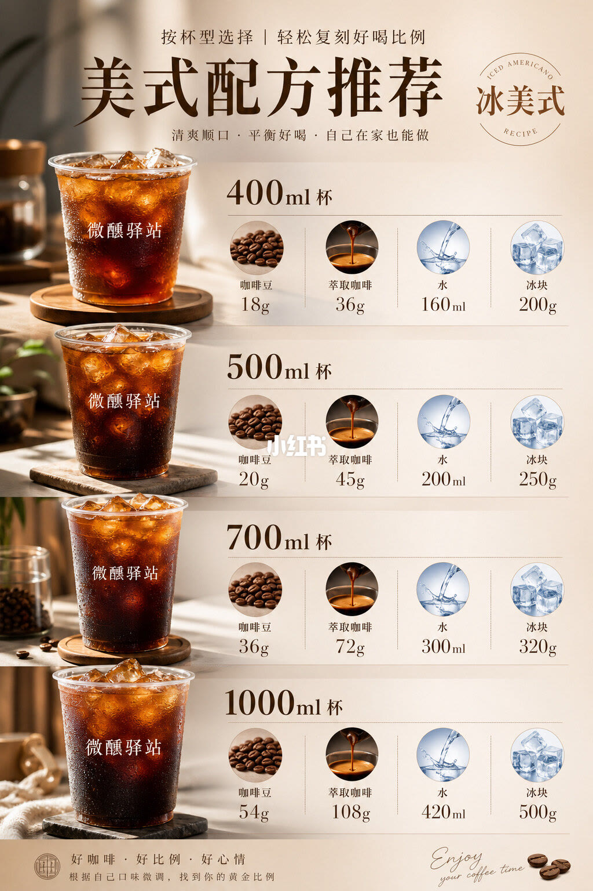

1/1
四只杯子，四组固定克数

整篇只有这一张海报，标题是「美式配方推荐」，副题写着按杯型选择、自己在家也能做。右上角圆标标明这是冰美式。左侧四只透明杯由上到下变大，杯身印着「微醺驿站」。每一行右边四格图标依次是咖啡豆、萃取咖啡、水和冰块。
400 毫升：咖啡豆 18 克，萃取咖啡 36 克，水 160 毫升，冰块 200 克。500 毫升：20 克豆，萃取 45 克，水 200 毫升，冰 250 克。700 毫升：36 克豆，萃取 72 克，水 300 毫升，冰 320 克。1000 毫升：54 克豆，萃取 108 克，水 420 毫升，冰 500 克。页脚让按自己的口味微调，去找「黄金比例」，没有给出第二套数字。
正文给这四档起了名字。400 毫升叫标准杯，说浓度刚刚好，适合大多数人。500 毫升叫大杯，杯子就是这个容量时用这一档。700 毫升叫超大杯，写成给长时间工作的人。1000 毫升叫巨大杯，正文认为居家和办公不合适，更适合户外运动和很强的提神需求。这些称呼写在笔记正文里，图上对应的是毫升数。
边界
这是四组家用配方，随冰融化会变淡
图和正文给出的是作者自己的四档用量。400 与 700、1000 的萃取液都是豆重的两倍（18 对 36、36 对 72、54 对 108），500 毫升是 20 克豆萃 45 克，倍数略高。水和冰没有按豆量同倍放大：豆从 18 克到 54 克是三倍，水从 160 毫升到 420 毫升，冰从 200 克到 500 克。所以换杯时要整行照抄，不能只把 400 毫升那一行乘一个杯数。
海报没有写研磨度、萃取时间、水温、烘焙程度，也没有写冰块化开之后还要不要把水减掉。页脚的「微调」没有给出加减范围。四档相加大致接近杯量（液重加水重加冰重），那是这组数字凑出来的结果，图本身没有把这个算法写出来。